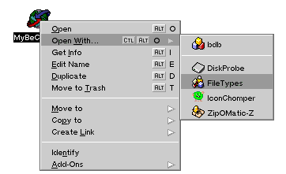
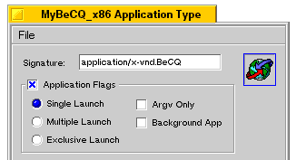
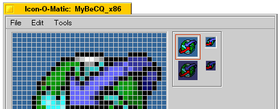

BePhoneBook Documentation |
HOW TO USE BePhoneBook :
1) The different ways to open a file :
First to open your file you have two different ways : if it was saved by BePhoneBook.
You can drag and drop it on your BePhoneBook shortcut or directly into the program window.
The second solution is more classical you open it into the menu File/Load.
If your file was created by Phonebook you must load your file into the menu File/Import.
2) How to create entries and exploit them :
To add someone simply click on Add button and type all that is asked and validate.
You will know if there's a note associated to the entry with the icon that have a pen.
To view the note simply click on Note and a window will appear.
To change some details click on the Edit button.
In BePhoneBook you can also Drag and Drop entries between two windows and it's very usefull to create others phonebook without typing it all !!! To make a multiple Drag and Drop simply press the shift button to add someone to your selection.
When you are searching someone into your list you can type the first letter of the entry and the selection will be the first entry starting with this letter so when you have big lists it's easier to find someone.
3) The different ways to save a file :
You can save your file into the menu File/Save or File/Save As if you want to change its name.
To make your file useable into Phonebook you must choose the Export command into the menu File.
If you want to close the program and you've made changes into your file BePhoneBook wil ask you if you want to save.
4) How to create skins for BePhoneBook :
You can create your skins with icons.
Open an icon or a program with file types :

You obtain this window :

Double-click on the icon in this window. You obtain another window :

Now you choose the little or big icon depending on what you want this icon to be in your skin the drag and drop it on your desktop. You obtain a file named Untiled bitmap. Rename it with the corresponding name in the table and put it in a folder. When you've finished your skin put its folder in the Skins folder of BePhoneBook. That's it !!!
Note : if you don't want the button to change when you push on it don't put the files for pushed buttons.
| Description | Name of the picture | Size of the picture |
|---|---|---|
| Add Button 1 (unpushed) | AddB | 32*32 |
| Add Button 2 (pushed) | AddB2 | 32*32 |
| Edit Button 1 (unpushed) | EditB | 32*32 |
| Edit Button 2 (pushed) | EditB2 | 32*32 |
| Delete Button 1 (unpushed) | DeleteB | 32*32 |
| Delete Button 2 (pushed) | DeleteB2 | 32*32 |
| Note Button 1 (unpushed) | NoteB | 32*32 |
| Note Button 2 (pushed) | NoteB2 | 32*32 |
| Dial Button 1 (unpushed) | DialB | 32*32 |
| Dial Button 2 (pushed) | DialB2 | 32*32 |
| Someone that has a note | Note | 16*16 |
| Someone that hasn't a note | NoNote | 16*16 |
| Icon of the saved file (big) | Bicon | 32*32 |
| Icon of the saved file (small) | Sicon | 16*16 |